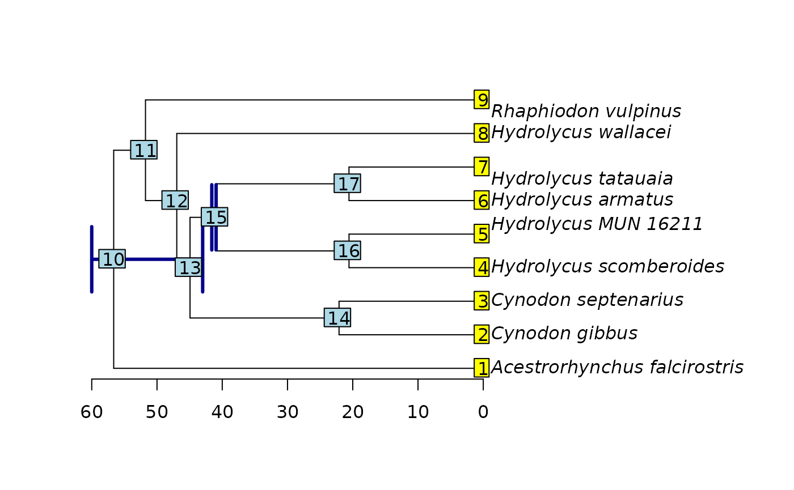

Starting trees and how to specify them
Gustavo A. Ballen and Sandra Reinales
Source:vignettes/starting_tree.Rmd
starting_tree.RmdInitial trees are used in three different ways in a divergence time
estimation analysis: Random trees when (i) the topology and divergence
times are co-estimated (e.g., Beast2), and user-defined
trees when (ii) complex analyses are carried out comprising several
terminals and multiple calibration points, and therefore a good initial
tree helps reach convergence, and (iii) when we want to fix the topology
and just estimate divergence times.
However, node times must be compatible with the calibration
densities, otherwise, the likelihood of the initial tree is zero, and
thus, their posterior probability. This generates an issue in programs
such as Beast2 which will try a finite (e.g.,
)
number of tree proposals; if all these fail, the analysis will not
start.
Initial trees are challenging to prepare by hand because they need to
be consistent with all node calibrations, in order to the initial
product of likelihood and priors is different from zero. Node times need
to be within the domain of the calibration distribution, so that branch
length need to be specified accordingly. We can infer initial trees
using a fast method such as maximum likelihood or maximum parsimony. If
the latter is used for inferring an initial tree, TNT is a
popular alternative to use. However, its format is specific to the
program and differs from standard newick, so it is impossible to use it
as initial tree in other types of analyses. tbea has a
function for converting from TNT tree format to standard newick, thus
allowing to use parsimony trees as initial proposals in Bayesian
programs.
# load the packages
library(tbea)
library(ape)
# create a file with multiple trees in TNT format
writeLines(text=c("tread 'three arbitrary trees in TNT format'",
"(Taxon_A ((Taxon_B Taxon_C)(Taxon_D Taxon_E)))*",
"(Taxon_A (Taxon_B (Taxon_C (Taxon_D Taxon_E))))*",
"(Taxon_A (Taxon_C (Taxon_B (Taxon_D Taxon_E))));",
"proc-;"),
con = "someTrees.tre")
# convert TNT to newick
tnt2newick(file="someTrees.tre", return=TRUE)## [1] "(Taxon_A,((Taxon_B,Taxon_C),(Taxon_D,Taxon_E)));"
## [2] "(Taxon_A,(Taxon_B,(Taxon_C,(Taxon_D,Taxon_E))));"
## [3] "(Taxon_A,(Taxon_C,(Taxon_B,(Taxon_D,Taxon_E))));"
# cleanup after the example
file.remove("someTrees.tre")## [1] TRUEIn order to generate a tree in which node times are consistent with
the calibration priors we can use a fast method such as penalized
likelihood (implemented in the ape package) using the
initial tree and our set of node calibrations:
# read tree with ape
tree <- read.tree(text="(Acestrorhynchus_falcirostris:0.1296555,
((((Cynodon_gibbus:0.002334399,Cynodon_septenarius:0.00314063)
:0.07580842,((Hydrolycus_scomberoides:0.007028806,Hydrolycus_MUN_16211
:0.009577958):0.0225477,(Hydrolycus_armatus:0.002431794,
Hydrolycus_tatauaia:0.002788708):0.02830852):0.05110053)
:0.02656745,Hydrolycus_wallacei:0.01814363):0.1712442,
Rhaphiodon_vulpinus:0.04557667):0.1936416);")
# get the node IDs according to the mrca of pairs of appropriate
# species root
mrca(tree)["Acestrorhynchus_falcirostris", "Hydrolycus_armatus"]## [1] 10
# Hydrolycus sensu stricto (cf. Hydrolycus)
mrca(tree)["Hydrolycus_scomberoides", "Hydrolycus_armatus"]## [1] 15
# specify calibrations as a data frame
calibs <- data.frame(node=c(10, 15),
age.min=c(43, 40.94),
age.max=c(60, 41.6),
stringsAsFactors=FALSE)
# calibrate the tree with the information in calibs using ape
set.seed(15)
calibrated <- chronos(phy=tree, calibration=calibs)##
## Setting initial dates...
## Fitting in progress... get a first set of estimates
## (Penalised) log-lik = -2.287137
## Optimising rates... dates... -2.287137
## Optimising rates... dates... -2.286842
## Optimising rates... dates... -2.286299
## Optimising rates... dates... -2.285826
## Optimising rates... dates... -2.285409
## Optimising rates... dates... -2.285041
## Optimising rates... dates... -2.284715
## Optimising rates... dates... -2.284423
## Optimising rates... dates... -2.284154
## Optimising rates... dates... -2.283918
## Optimising rates... dates... -2.283706
## Optimising rates... dates... -2.283513
## Optimising rates... dates... -2.283338
## Optimising rates... dates... -2.283176
## Optimising rates... dates... -2.283028
## Optimising rates... dates... -2.282891
## Optimising rates... dates... -2.282766
## Optimising rates... dates... -2.282649
## Optimising rates... dates... -2.282541
## Optimising rates... dates... -2.282441## Warning: Maximum number of dual iterations reached.##
## log-Lik = -2.279378
## PHIIC = 52.56
# plot the calibrated tree
plot(calibrated, label.offset=1.2)
axisPhylo()
# fetch the plotted tree from the graphic environment
plttree <- get("last_plot.phylo", envir=.PlotPhyloEnv)
# process the node heights and reorder as needed
nodes <- cbind(plttree$xx, plttree$yy)
nodes <- nodes[c(10, 15),]
nodes <- cbind(nodes, calibs[, c("age.min", "age.max")])
colnames(nodes) <- c("x", "y", "min", "max")
nodes <- cbind(nodes, rev.min=-(nodes[, c("min")] - max(plttree$xx)))
nodes <- cbind(nodes, rev.max=-(nodes[, c("max")] - max(plttree$xx)))
# plot the original calibrations as error bars
arrows(x0=nodes[, "rev.max"], x1=nodes[, "rev.min"],
y0=nodes[,"y"], y1=nodes[,"y"],
angle=90, length=0.3, lwd=3,
code=3, col="darkblue")
nodelabels()
tiplabels()
# write the tree
write.tree(phy=calibrated)## [1] "(Acestrorhynchus_falcirostris:56.63484744,((((Cynodon_gibbus:22.10239036,Cynodon_septenarius:22.10239036):22.83581459,((Hydrolycus_scomberoides:20.57344414,Hydrolycus_MUN_16211:20.57344414):20.36655586,(Hydrolycus_armatus:20.57862347,Hydrolycus_tatauaia:20.57862347):20.36137653):3.998204946):2.031301698,Hydrolycus_wallacei:46.96950664):4.794354381,Rhaphiodon_vulpinus:51.76386102):4.870986415);"